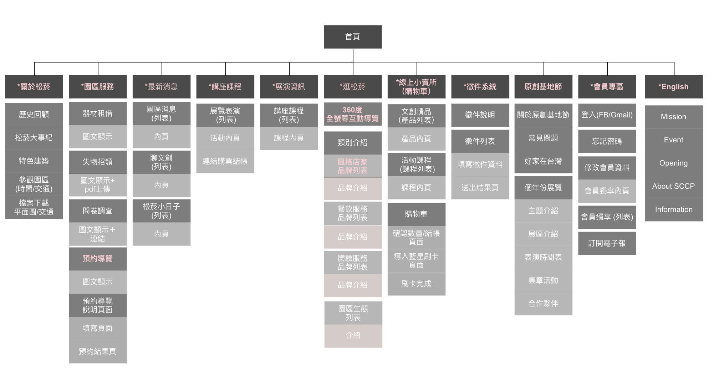
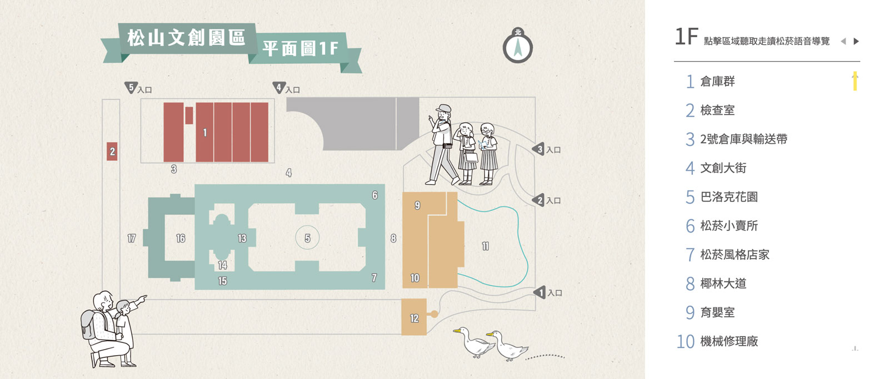
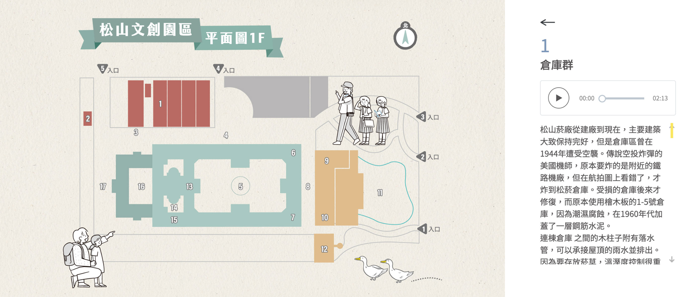
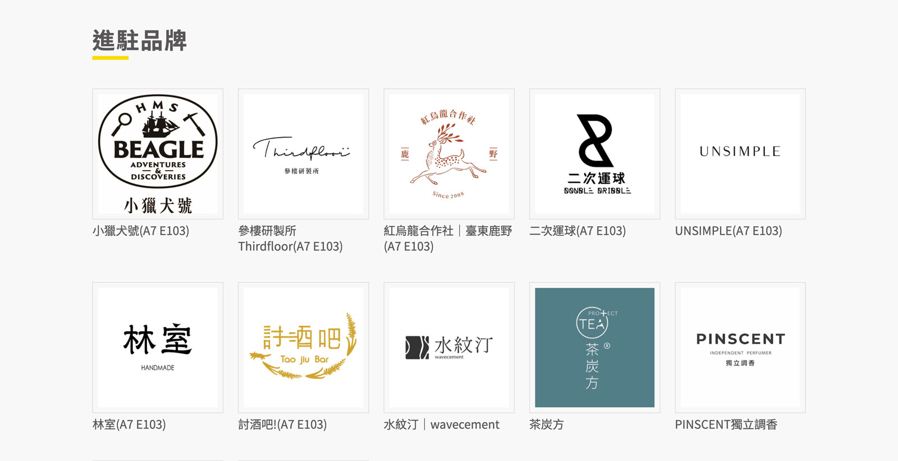
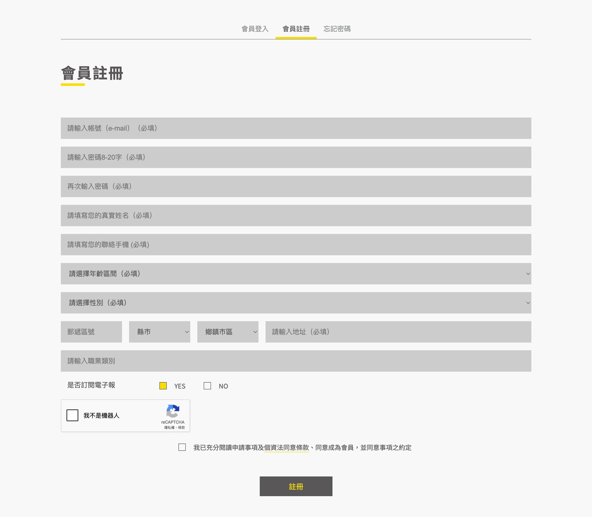
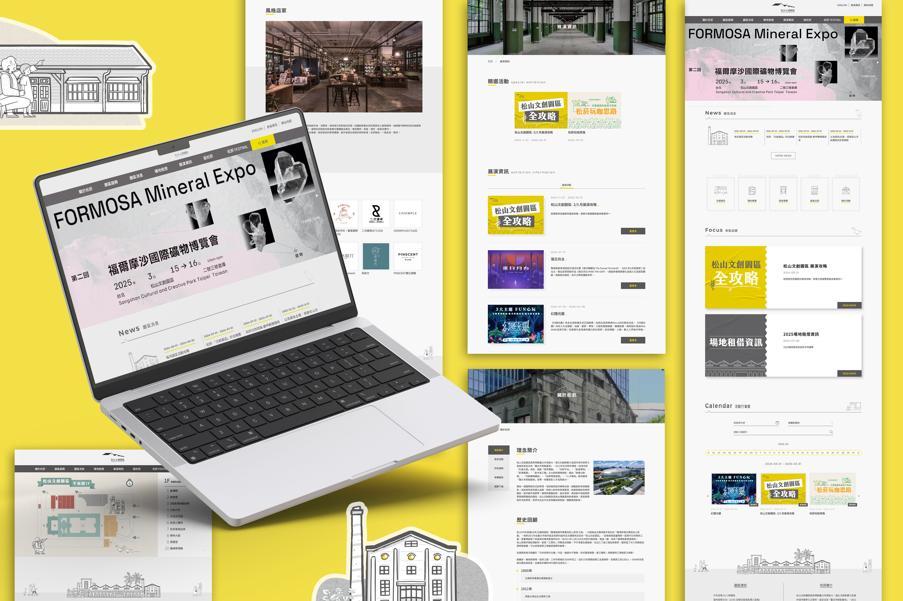

優化網站導覽結構，輕鬆獲取園區資訊
改善松山文創園區舊官網資訊架構分散、介面老舊、行動裝置體驗不佳等問題，規劃品牌整體視覺一致性與介面設計，提升品牌視覺美感，統整園區資訊、優化使用者體驗，並確保使用者能輕鬆獲取完整園區活動資訊，亦打造專屬後台系統，提升網站更新效率。


發現與挑戰
在與客戶訪談與舊站體驗分析後，發現幾個核心問題：
- 網站資訊分散（ex.松菸小賣所、原創基地節 原為獨立網站 )。
- 視覺風格未統一，無法有效呈現品牌定位。
- 缺乏會員系統與後台維運效率低下，造成園區人員管理負擔。
研究執行
參考了國內外文創園區網站，歸納出符合「資訊分類簡明」、「行動友善」、「視覺識別一致」的實務設計重點。
- 重整導覽與頁面架構，提升資訊取得效率。
- 優化使用者體驗與視覺呈現，強化品牌感受。
- 建立可擴充的後台管理與會員互動機制。
重整網站資訊架構 與 主視覺與元件設計統一
整合「原創基地節」、「松菸小賣所」等子站內容，簡化分類邏輯，提升搜尋與導覽效率。
重新規劃整體網站視覺風格，導入CIS色彩規範，主色調為灰色，黃色為輔助色，並規範頁面標題、段落、字級大小、間距等，提升整體視覺一致性與可讀性。


icon導覽設計：以視覺導引強化主題頁連結，提升使用者體驗
首頁以icon設計，清楚呈現幾個重要資訊頁面連結，幫助使用者能快速找到所需要的內容。

首頁行事曆功能：一鍵查詢每日展覽與活動資訊，簡化使用者查找流程
在首頁增加行事曆功能，使用者只要選擇日期，便能查詢當日有開放的展覽活動。

整合 關於松菸 頁面內容：以5大主題整併原內容，採錨點式設計，讓用戶能有系統地瀏覽
將原本「 關於松菸 」內的12個子項目統整，重新編排為5個區塊，並以下錨點的方式讓使用者能清楚、有系統的瀏覽。
互動導覽地圖設計：結合語音與文字說明，提升園區探索體驗
將地圖上每個地點加上說明，只要點選右側標示的地點，便會展開詳細說明介紹，還有語音導覽功能。


後台與會員系統設計：建立後台管理平台、串接會員登入系統，提升活動管理與行銷效率
為園區量身打造後台管理平台，支援活動、店家、展覽等資訊即時更新。
開發會員專區，讓徵稿活動、預約導覽等部分功能可以更完善管理。


成果與效益
- UI/UX全面提升，使用者操作流程更直覺、回訪率提高。
- 後台維運效率提升，客戶可快速上架、更新各項園區資訊與活動頁面。
- 網站可承載200人即時上線操作，效能優化成果顯著。
